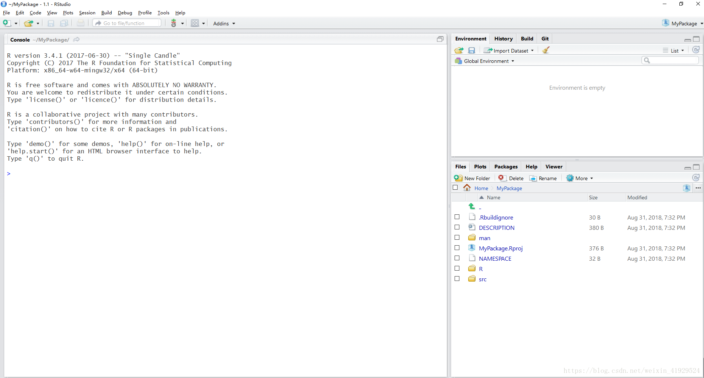

用Rcpp生成R包时踩过的坑
薛英杰 / 2021-01-27
大家都知道所有编程语言中唯有C的速度最快，为了提升R的运算效率，大家都会借助于Rcpp包实现R与C的无缝衔接。而且很多R包的开发者也借助于Rcpp来优化代码。下面说说生成R包的过程和踩过的坑。
创建项目
首先我们进如Rstudio，然后选择左上角File——New Project，会出现如下界面，我们选择New Directory。
再选择R Package，得到如下界面。在Package Name中输入我们包的名称，再在下面选择Add，将我们的.cpp格式的C++文件选择进去（里面是我们的函数）。最后点击Create package，即可创建一个R包的project了。
创建完成后，弹出新的界面如下：

修改文件
从上界面的右下角的File框中出现一些文件，包括DISCRIPTION等以及man、R、src三个文件夹。在R文件中存的是R代码，src文件夹中是C++代码（包括我们之前添加的C++代码），可能你的C++代码中只有添加进去.cpp文件，由于我的代码中不止使用了#include <Rcpp.h>，还有使用#include <RcppEigen.h>，这里注意，一定需要在DISCRIPTION文件的最后添加下面两行（尤其是LinkingTo，不然会编译失败）：
Imports: Rcpp
LinkingTo: Rcpp, RcppEigen此外还可以在DISCRIOTION文件，添加一些作者姓名等一些重要信息。完成后如下图：

我们直接进行修改即可。这里需要注意一下，Imports里面涉及到软件的版本，是根据你R中现有包的版本来，如果想让更多的电脑使用，在不影响程序使用的前提下，可以适当降低依赖包的版本。
打包
方法1
选择上方的Build——Build Source Package，具体如图所示：
> 方法2
点击右上角的Build中的Build & Reload
第一种方法打包成功后，当下面出现DONE字样时，说明包会在默认路径下安详地躺着了。第二种方法打包成功后会自动library载入。
大坑
经过以上过程后，制作、生成、载入都没有问题，但在载入R包内用Rcopp写的函数时就出现如下问题：
Error in .Call("_RI_RI", PACKAGE = "RI", X, Y) :
"_RI_RI" not available for .Call() for package "RI"解决办法
找到 NAMESPACE 文件，默认只有下述的语句：
exportPattern("^[[:alpha:]]+")我们在其下方添加如下语句（再次提醒，做的包名叫 RI，大家替换成自己相应的包名即可）:
useDynLib(RI, .registration = TRUE)
之后再次制作、生成、载入与调用函数，发现报错信息发生了变化：
Error in RI(matrix(1:6, 3), matrix(1:6, 2)) :
function 'enterRNGScope' not provided by package 'Rcpp'
这时我们再尝试在 NAMESPACE 文件添加如下语句即可：
import(Rcpp)NAMESPACE文件的最终形态为：
exportPattern("^[[:alpha:]]+")
import(Rcpp)
useDynLib(RI, .registration = TRUE)